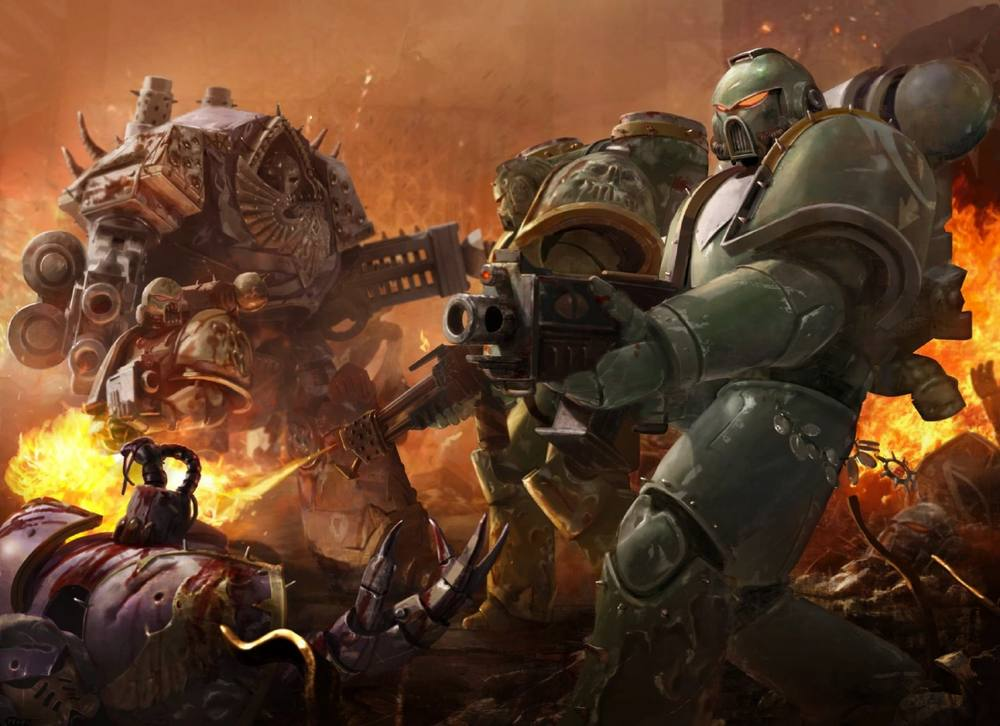

Legion Wars
| Legion Wars | |
|---|---|
| Also called the Slave Wars | |
 Khârn the Betrayer of the World Eaters, whose actions on Skalathrax ended his Legion as a single army Artwork © Games Workshop | |
| Date | Early M31, after the end of the Great Scouring; no exact dates are known |
| Location | Daemon worlds of the Eye of Terror: Skalathrax, Maeleum, Harmony |
| Result | The World Eaters and Emperor's Children broken into warbands; the Sons of Horus reformed as the Black Legion; Abaddon the Despoiler made Warmaster of Chaos |
| Belligerents | |
| Commanders and leaders | |
| Strength | |
| Casualties and losses | |
| Millions of slaves and cultists killed[k][c] | |
The Legion Wars, also called the Slave Wars or the Eye of Terror Slave Wars, were the wars between the Traitor Legions of the Heretic Astartes that followed the end of the Horus Heresy. They were fought in the early 31st millennium on the daemon worlds of the Eye of Terror, the warp rift into which the Legions had retreated, and they ended the brief unity that the Traitors had shown under Horus.[1]
The wars began when the Emperor's Children, whose pursuit of excess had left them hungry for slaves, started to raid the strongholds of their old allies. They included the battle on Skalathrax, in which the World Eaters ceased to exist as a single Legion; the destruction of the Sons of Horus fortress on Maeleum and the theft of Horus's body; and a counter-raid by the survivors of the Sons of Horus on the Emperor's Children's Canticle City on Harmony. That raid ended the wars. Its leader, Abaddon the Despoiler, who had been First Captain of the Sons of Horus, declared himself the Warmaster of Chaos in succession to Horus and renamed his followers the Black Legion.[1][2]
The Imperial record of these wars is thin. The Eye of Terror is a warp rift in which time, distance and memory are unreliable, and what the Imperium knows comes from the interrogation of captured Heretic Astartes, from the sealed archives of the Inquisition, and from Black Legion propaganda, which is not to be trusted. The sequence below should be taken as the Inquisition's best reconstruction.[2]
Background
[edit]The retreat
[edit]When the Siege of Terra failed, the surviving Traitor Legions broke orbit and fled. In the Great Scouring that followed they were hunted by the loyalist Legions and the Imperial Navy. The Traitors who survived took refuge in the Eye of Terror, preferring the madness of the Warp to the vengeance of the Emperor's sons. The Sons of Horus, who had lost their primarch at the Siege, reached the Eye reduced to a fraction of their strength, with their commanders at odds over whether to give their loyalty to Horus's memory or to the Chaos Gods who had used him.[1]
In the Eye the alliance of the Traitor Legions came apart. Their unity had been Horus's work. Without it, each Legion reverted to its own ambitions, and the quarrel that the Chaos Gods had put aside for the Heresy resumed. The Legions of the Eye, called the Nine in the Imperial records, became enemies. Most of them also lost their primarchs. Several became daemons, and the Legions, which had been organised armies, broke up into warbands led by Chaos Lords who followed no commander but themselves.[2]
The Slave Wars
[edit]The Emperor's Children were the cause. During the Heresy they had taken slaves from the worlds they passed through, and on the retreat from Terra they took more. These slaves were the means by which the Legion, whose devotion to Slaanesh required an endless supply of living subjects, sustained itself. By the end of the Scouring they had used them up. The Legion turned on its allies, and began to raid their holdings for slaves. It is for this reason that the conflict is called the Slave Wars.[1]

Skalathrax
[edit]The first great battle of the wars was fought on Skalathrax, a daemon world within the Eye so cold that even a Space Marine could die in its night. The World Eaters, who were in search of a homeland of their own, landed to take it from the Emperor's Children, who held it. After a day of fighting, the long night came. The temperatures were so severe that both sides agreed to an armistice and went into shelters to wait for the dawn.[3]
Khârn, formerly the Equerry of the primarch Angron, could not accept it. He had been the last of his Legion to leave Terra, and by the World Eaters' own count had killed a million of the enemy at the Lion's Gate. He thought that the weakness of the Traitors had cost them the Siege, and now saw his brothers creeping to shelter. He took a flamer and burned those he found, and when others tried to stop him he killed them with his chain-axe Gorechild. In the confusion three of his Legion's warriors attacked him. He killed two, and then found that the third, whom he had cut down, was Centurion Gruner, the man who had trained him. Gruner cursed him for striking the battle-brothers of his own Legion. Khârn killed him as well.[3]
The Legion was shattered. The World Eaters, who from that night called Khârn the Betrayer, dispersed into dozens of warbands of Khornate berserkers that raided in the Eye and beyond. Their primarch Angron would at times draw some of them together, but the XII Legion did not fight as one army again until the First War for Armageddon in the 41st millennium. Imperial scholars regard the battle as a stalemate, in which both Legions were beaten. The Emperor's Children were left with a ruined holding, and the Blood God, who had been pleased by the slaughter, was not displeased.[3]
Maeleum
[edit]The Sons of Horus stood aside from the first wars. They carried the body of their primarch, preserved in stasis, into the depths of the Eye. On the daemon world of Maeleum, a graveyard of rusting steel, they built a fortress from the wrecks of ships lost to the Warp, with the help of thousands of slaves taken from Imperial worlds. They called it Lupercalios, the Monument, and interred Horus's body in a great tomb at its centre. Many of the Legion fell into the worship of their dead primarch. Their captains disagreed about the future of the Legion: some wished to increase their numbers, others held that the Warp would supply what they needed if they could learn to merge daemon and Marine.[1]
The Emperor's Children, grown strong in their pact with Slaanesh, attacked Maeleum. They broke through its defences and into the central chambers, and carried away the corpse. The Sons of Horus say that it was given to the Emperor's Children's Chief Apothecary, Fabius Bile, who meant to clone it in order to create a new and greater Warmaster who might unite the Traitors again. The Emperor's Children believed that a reborn Horus would end the Legion Wars in their favour.[2]
Abaddon
[edit]The pilgrimage
[edit]The First Captain of the Sons of Horus, Ezekyle Abaddon, was not at Maeleum. He had left the Legion, broken by the death of Horus and sick of war, and had taken the battleship Vengeful Spirit into the furthest parts of the Eye. Imperial sources, citing the testimony of a captured Black Legion sorcerer, call this his Dark Pilgrimage. Abaddon, it is said, walked on every world of the Eye, to learn its limits and its secrets, and came to see that the Legion Wars were not his battles. He learned that the power of daemons could be harnessed and that the Eye held many forbidden weapons and lost worlds, and he formed the idea of what he called the Long War.[2]
The gathering
[edit]When the survivors of the Sons of Horus learned that Lupercalios had fallen, Falkus Kibre, the chieftain of the Duraga kal Esmejhak warband and former commander of the Justaerin, summoned two allies to a secret meeting on a wrecked cruiser: the former Thousand Sons sorcerer Iskandar Khayon of the Kha'Sherhan warband, and the former World Eaters gunner Lheorvine Ukris of the Fifteen Fangs. He told them that the body of Horus had been stolen, and that his only hope was to find the Vengeful Spirit and with it to destroy the Emperor's Children's capital. A captive Word Bearers priest, Sargon, who had abandoned the teachings of Lorgar, said that he knew where the ship was.[2]
An Emperor's Children warband under a sardar, Kadalus Orlantir, who commanded the warship Perfection's Lament, tried to intercept them and to seize Sargon. The three warbands escaped it and travelled by the Webway to the Radiant Worlds, on the edge of the Eye, where the light of the Astronomican falls. On the ruined Aeldari world of Aas'ciaral they found the Vengeful Spirit buried in the snow at the bottom of a ravine, and Abaddon waiting for them. He was gaunt, long-haired and gold-eyed, in armour taken from the dead of all Nine Legions. He had called them to him. He told them that the Legions had become hordes, and proposed to found a new one, not as slaves of the Emperor's will nor in the image of failed primarchs, but as brothers bound by loyalty and ambition.[2]
Canticle City
[edit]The new company, joined by Telemachon Lyras, a sword-captain of the Emperor's Children, and by the White Seer Ashur-Kai of the Thousand Sons with a hundred and four Rubricae, gathered on the Vengeful Spirit to plan an attack on Canticle City. This was the Emperor's Children's fortress on the daemon world of Harmony, where Fabius Bile kept the clones of Horus. The city, which had survived the breaking of the Legion at Skalathrax, was still a refuge for many of the Emperor's Children and their allies, and it was ringed with fleets that outnumbered the attackers twenty to one.[2]
Abaddon's plan was to strike at the heart. The Vengeful Spirit was to approach Harmony with a skeleton crew, guided by the machine spirit of Khayon's ship, and Khayon was to do the rest. Khayon dragged the dead cruiser Tlaloc, which had belonged to the XV Legion and was almost two kilometres long, across the Eye with his mind, and hurled it into the city. It fell for less than a solar minute. The impact tore the heart out of the fortress, and the tremors were felt on the far side of the world. As the Vengeful Spirit rose into orbit it fired on the ships fleeing from the planet, and then boarded the cruiser Pulchritudinous, which carried the clones. In the boarding action the Black Legion's characteristic method, overwhelming force on a single goal, was seen for the first time.[2]
Aftermath
[edit]Abaddon had the body of Horus destroyed on Maeleum, so that no further attempt could be made to clone it. He declared himself Horus's successor as the Warmaster of Chaos, but to his men he gave a different message: that Horus had died because he was weak and had been too hasty, and that the true war would take thousands of years. He had the Sons of Horus repaint their green armour black, the colour of mourning and vengeance, and abandoned the name of the XVI Legion. They became the Black Legion, a fleet-based Legion with scattered holdings in the Eye. One by one the other Traitor Legions came to terms with it. The Black Legion crushed lesser warbands, absorbed others and, according to Black Legion tradition, brought the daemon primarchs to submit, with Magnus the Red forced to his knees by the might of Khayon.[2]
The Emperor's Children, like the World Eaters before them, were broken as an army, and became hundreds of warbands. Fabius Bile, who had retreated from Canticle City with the remains of his work, was hunted by his own Legion and by others. The fate of Fulgrim in these wars is disputed. The enemies of the Slaanesh-worshippers say that Abaddon killed him. The Emperor's Children say that Slaanesh gave him a daemon world of unending pleasure, whose location is unknown even to them.[2]
Legacy
[edit]The Legion Wars gave the Traitors the shape that they have kept. There is no one Traitor Legion with a unified command. The Black Legion alone has kept its Legion structure and its Warmaster, and it is the Black Legion that has led the Black Crusades. The Emperor's Children, the World Eaters and the Thousand Sons all survive as warbands or cults, and in each the memory of the wars is a reason for hatred.[2]
Many Imperial scholars regard the wars as the Imperium's good fortune. If the Traitors had held together, the Scouring would have been harder and the Imperium would have had to face them sooner. The Ordo Malleus, however, has long regarded Abaddon's lesson, that a warband could grow into a Legion, as the more dangerous.[2]
See also
[edit]Notes
[edit]- ^ With their cults.
- ^ Of the Eye of Terror.
- ^ a b c d e f g Estimated; Imperial records give no figure. The Legion was strong in its pact with Slaanesh.
- ^ They outnumbered the attackers twenty to one.
- ^ They fought as one Legion for the last time at Skalathrax.
- ^ Reduced to a fraction of their strength after the Siege of Terra.
- ^ Abaddon's raiders, aboard the Vengeful Spirit.
- ^ On Harmony, by the hulk of the Tlaloc.
- ^ Fabius Bile was hunted by his own Legion.
- ^ The Legion was shattered at Skalathrax.
- ^ The Canticle City on Harmony was ruined.
References
[edit]Further reading
[edit]- Lexicanum Martialis. Officio Militaris. Entries on the Black Legion and the World Eaters.
- Reconstruction of the Legion Wars from the Testimony of Captured Heretic Astartes (M35). Ordo Malleus (restricted).